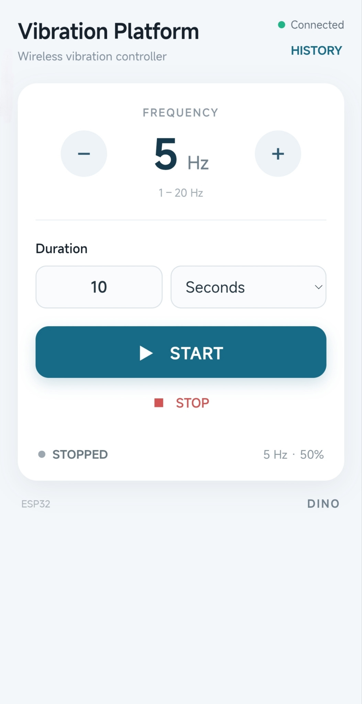
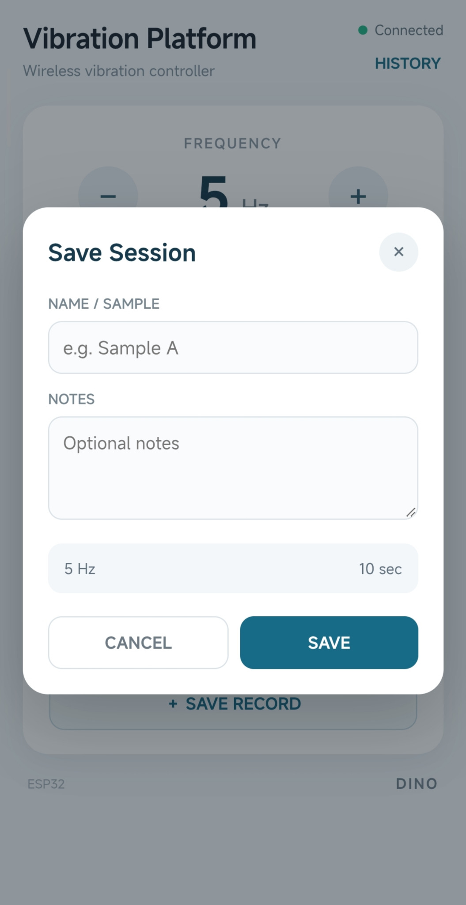

ESP32 Vibration Platform
This project uses an ESP32 to control a small vibration platform over Wi-Fi and monitor its motion. The interface lets the user set a vibration frequency and duration, start or stop the motor, and review saved session records.
System Components
- ESP32: Hosts the Wi-Fi control interface and records measurement data.
- L298N driver: Controls the vibration motor.
- NFP-7C-FS0725 motor: Produces the platform vibration.
- MPU-6050: Measures acceleration for vibration monitoring.
Functions
- Set a target frequency from 1 to 20 Hz and choose a run duration.
- Start and stop the motor from a browser on the same Wi-Fi network.
- Read acceleration from the MPU-6050 and estimate vibration amplitude and frequency.
- Save named sessions in a history view for later review.
Web Control Interface


Implementation Notes
The ESP32 controls the motor through PWM and communicates with the MPU-6050 over I²C.